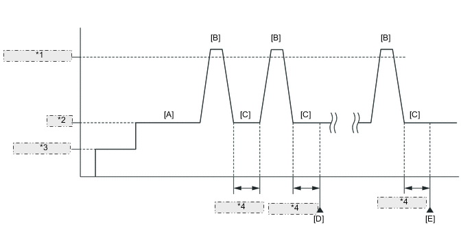

Inspection After Repair
Perform Learning Value Reset and Idle Learning after replacing or servicing parts related to engine operation. Details on procedures required are indicated by an asterisk and a number, and are explained in detail following the table.
| Part Replaced | Engine Operation | Learning Value Reset*1 | Idle Learning*2 |
|---|---|---|---|
|
- | ○ | ○ |
| Engine assembly | - | ○ | ○ |
|
Confirm the following and perform Learning Value Reset and Idle Learning when one or more of the following conditions is met:
|
○ | ○ |
| None of the conditions in the list above are met. | - | - | |
| Knock control sensor*4 | - | - | - |
○: Necessary.
-: Unnecessary.
Note
Engine learned values cannot be reset by disconnecting the cable from the negative (-) auxiliary battery terminal or removing the EFI-MAIN and ETCS fuses.
*1: Learning Value Reset
Connect the GTS to the DLC3.
Turn the power switch on (IG).
Turn the GTS on.
Enter the following menus: Powertrain / Engine / Utility / Learning Value Reset.
Confirm the following conditions as instructed on the screen.
- Power switch on (IG)
- Engine stopped
- Auxiliary battery voltage is higher than 9 V
Select "Next" and initialize the learned value.
Tech Tips
If a message indicating learned value initialization failure is displayed on the screen, confirm the execution conditions, and perform Learned Value Reset again.
After the completion of learned value initialization, confirm the air fuel ratio learned values (A/F Learn Value Idle Bank 1, A/F Learn Value Low Bank 1, A/F Learn Value Mid No.1 Bank 1, A/F Learn Value Mid No.2 Bank 1, and A/F Learn Value High Bank 1) in the Data List.
| Result |
|---|
| If 0 is displayed for all of the air fuel ratio learned values, initialization has completed correctly. |
| If a value other than 0 is displayed for one of the air fuel ratio learned values, perform initialization again. After initialization, confirm the air fuel ratio learned values. If a value other than 0 is displayed, replace the ECM. |
*2: Idle Learning
Turn the power switch off and wait for at least 30 seconds.
Turn the power switch on (IG).
Turn the GTS on.
Put the engine in Inspection Mode (Maintenance Mode).
Enter the following menus: Powertrain / Engine / Data List / Coolant Temperature.
Start the engine and warm it up until the engine coolant temperature is 70°C (158°F) or higher.
Turn the power switch off, and then on (READY).
With park (P) selected, lightly depress the accelerator pedal to start the engine.
Wait until the engine stops.
Tech Tips
The engine normally stops within 1 minute. However, when the HV battery SOC is low, the engine may remain running for approximately 3 minutes.
Enter the following menus: Powertrain / Engine / Data List / ISC Learning.
Confirm that "Compl" is displayed on the GTS screen.
Put the engine in Inspection Mode (Maintenance Mode).
Start the engine.
Enter the following menus: Powertrain / Engine / Data List / Engine Speed and Engine Independent.
Check the Engine Speed when the value of Data List item Engine Independent is "Operate".
| Standard | ||
|---|---|---|
|
Tech Tips
Be sure to perform this step with the A/C switch and all accessories off.
Make sure that park (P) is selected.
If the value of Data List item Engine Independent is "Not Opr" when the engine is idling, charge control is being performed. Check the Engine Speed after charge control is complete ("Operate" is displayed).
*3: Perform Learning Value Reset and Idle Learning after replacing the throttle body assembly or cleaning deposits from the throttle body assembly.
After that, check the idle speed. If the idle speed is out of the specified range, perform the following procedure.
CAUTION:
When performing a driving test, obey all speed limits and traffic laws.
Tech Tips
History information for driving and stopping is necessary to update Idle Learning.

| *1 | 10 km/h [Engine running] |
| *2 | Idling |
| *3 | Power Switch on (IG) |
| *4 | 20 seconds or more |
Turn the power switch on (IG).
Turn the GTS on.
Put the engine in Inspection Mode (Maintenance Mode).
Warm up the engine (engine coolant temperature of 80°C (176°F) or higher) with the A/C switch and all accessories off [A].
Press the EV/HV mode selection switch to select HV mode.
While the engine running, drive the vehicle at a speed of 10 km/h (6 mph) or more [B].
Tech Tips
If the engine stops, further depress the accelerator pedal to restart the engine.
Idle the engine for 20 seconds or more [C].
Repeat procedure [B] and [C].
Enter the following menus: Powertrain / Engine / Data List / Engine Speed and Engine Independent.
Check the Engine Speed when the value of Data List item Engine Independent is "Operate" [D].
| Standard | ||
|---|---|---|
|
Tech Tips
Be sure to perform this step with the A/C switch and all accessories off.
Make sure that park (P) is selected.
If the value of Data List item Engine Independent is "Not Opr" when the engine is idling, charge control is being performed. Check the Engine Speed after charge control is complete ("Operate" is displayed).
If the idle speed is still out of the specified range, repeat procedure [B] and [C] until the idle speed is within the specified range [E].
*4: Drive the vehicle for a short while after replacing the knock control sensor and check if knocking occurs. If knocking occurs, drive the vehicle until knocking stops.